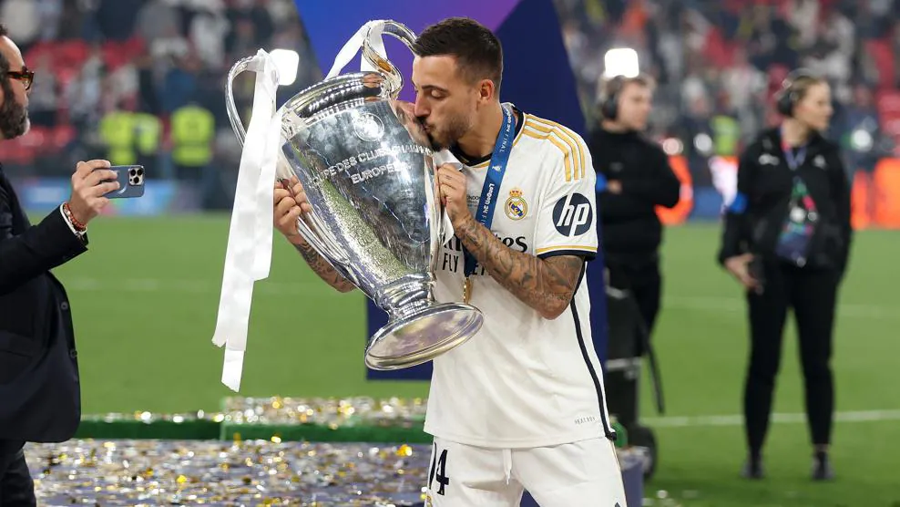

Notícias
Quais os países com mais vencedores da Liga dos Campeões?
Cinquenta e dois países já tiveram jogadores que venceram a Taça dos Campeões e a Espanha
lideraram com 79.
Cerca de 634 jogadores participaram em vitórias nas finais da Taça dos Campeões ou UEFA
Champions League (muitos deles mais de uma vez)*. Esse total inclui os 15 que jogaram pelo Real
Madrid na decisão de 2024.
Surpreendentemente, um jogador turco ainda não subiu ao pódio, depois de ter desempenhado o seu
papel na decisão da competição, e isso continuou em 2024, quando Arda Güler, do Real Madrid, foi
suplente não utilizado em Wembley.
